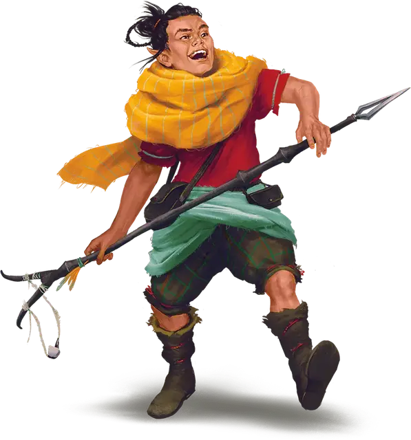

Кендер-застрельщик
Kender Skirmisher
Маленький Гуманоид

Класс Доспеха 14 (кожаный доспех)
Хиты 14 (4к6)
Скорость 30 футов
| мод | спас | ||
|---|---|---|---|
| СИЛ | 8 | −1 | −1 |
| ЛОВ | 16 | +3 | +3 |
| ТЕЛ | 10 | +0 | +0 |
| мод | спас | ||
|---|---|---|---|
| ИНТ | 12 | +1 | +1 |
| МДР | 8 | −1 | −1 |
| ХАР | 14 | +2 | +2 |
Навыки Восприятие +3, Ловкость рук +7, Скрытность +5
Иммунитет к состояниям испуг
Чувства пассивное Восприятие 13
Языки Общий, Наречие кендеров
Опасность 1/4 (50 опыта)
Бонус мастерства +2
Действия
Хупак. . Рукопашная или дальнобойная атака оружием: +5 к попаданию, досягаемость 5 фт. или дистанция 40/160 фт., одна цель. Попадание: 6 (1к6 + 3) колющего урона или 5 (1к4 + 3) дробящего урона, если кендер использует рогатку хупака для совершения дальнобойной атаки.
Насмешка. Кендер обрушивает поток оскорблений на существо, которое он может видеть в пределах 60 футов. Если цель может слышать кендера, она должна преуспеть в спасброске Мудрости Сл 12, иначе будет совершать с помехой броски атаки до конца своего следующего хода.
Бонусные действия
Неуловимость. Кендер совершает действие Засада или Отход.
Описание
Кендеры-застрельщики — бесстрашные бойцы, которые используют скрытность и хитрость для защиты своих домов и друзей. Они умеют выводить из строя своих врагов, уничтожая ключевую экипировку или подстрекая противников к совершению необдуманных действий. Они владеют характерным оружием кендеров — хупаком, сочетающим в себе копье и рогатку.
Насмешки кендеров
Совершите бросок или выберите пункт по таблице «Насмешки кендеров», чтобы определить как кендер-застрельщик выводит из себя противника в битве.
| к4 | Насмешка |
| 1 | "Должен ли я притворится испуганным? Мне кажется, тебе это действительно нужно." |
| 2 | "Я бы хотела быть такой, как ты — не заботиться о том, как я выгляжу..., или пахну..., или одеваюсь. Так смело!." |
| 3 | "Существует ли лицо Катаклизма? Я думаю, твое лицо могло бы им стать!" |
| 4 | Кендер показывает врагу средний палец и кричит: «Выкуси!». |